5 Tutoriál: A tekintet irányítása
A következő leírás a https://osdoc.cogsci.nl/4.0/tutorials/beginner/ oldal alapján készült. A célja az OpenSesame részletesebb bemutatása. A hivatalos oldalon szereplő minden részletre nem térünk ki, érdemes az oldalt felkeresni, sőt a többi felajánlott tutoriált is áttekinteni.
5.1 Az OpenSesame-ről
Ahogy korábban említettük az OpenSesame egy olyan program, amely lehetővé teszi pszichológiai, neurológiai és közgazdasági kísérletek egyszerű fejlesztését. Különösen alkalmas pszichológus hallgatók számára tesztkészítésre, mert egy grafikus, kattintásra épülő felülettel rendelkezik. A haladóbb, programozási ismeretekkel rendelkező felhasználók számára pedig Python és JavaScript kódok beépítését teszi lehetővé.
5.2 A kísérlet
Ebben a tutoriálban egy olyan kísérletet fogunk létrehozni, amelyet Friesen & Kingstone (1998) mutatott be. Ebben a kísérletben egy arcot középre helyezünk a képernyőn (5.1 ábra). Az arc vagy jobbra vagy balra néz. Egy célbetűt (F vagy H) a képernyő bal vagy jobb oldalán jelenítünk meg. A zavaró stimulus (az X betű) a képernyő másik oldalán jelenik meg. A feladat az, hogy minél gyorsabban jelezze a kísérleti személy, hogy a célbetű F vagy H. Kongruens állapotban az arc a célbetűt nézi. Inkongruens állapotban az arc a zavaró ingert (X) nézi. A hipotetikus eredmény szerint, a résztvevők gyorsabban reagálnak kongruens állapotban, mint inkongruensben, annak ellenére, hogy a tekintet iránya nem prediktív a cél helyzetére. Ez azt mutatja, hogy figyelmünket más emberek tekintete automatikusan irányítja, még olyan helyzetekben is, ahol ez nem szolgál semmilyen célra. (És még akkor is, ha az arc csak egy szmájli!)
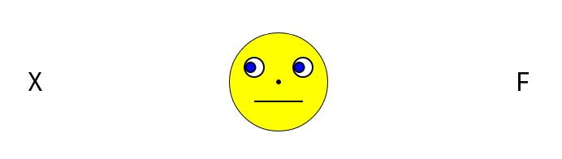
X) néz, és nem a célra (F).A kísérlet gyakorló és kísérleti (éles) részekből áll. Vizuális visszajelzést kap a kísérleti személy minden gyakorló blokk után. Ezen túl, minden helytelen válasz esetén egy hangot fog hallani a kísérleti személy.
5.3 Kísérleti terv
A kísérleti terv részletes magyarázata ebben a videóban érhető el. Az OpenSesame kísérleteket a megvalósítás előtt érdemes alaposan átgondolni. Egy konkrét kísérleti terv alapján sokkal könnyebb felépíteni a kísérletet. Erre látunk példát ebben a videóban. Az OpenSesame megismerését a videó megtekintése nem befolyásolja, de a jövőbeni kísérleti tervek elkészítéséhez hasznos lehet.
5.4 1. lépés: Hozzuk létre a fő szekvenciát
A OpenSesame elindítása után a Get started! oldal jelenik meg a Tab ablakban (5.2 ábra). Ha már korábban elindítottuk a programot, akkor a Ctrl+N gyorsbillentyűvel jeleníthetjük meg a kezdőoldalt.
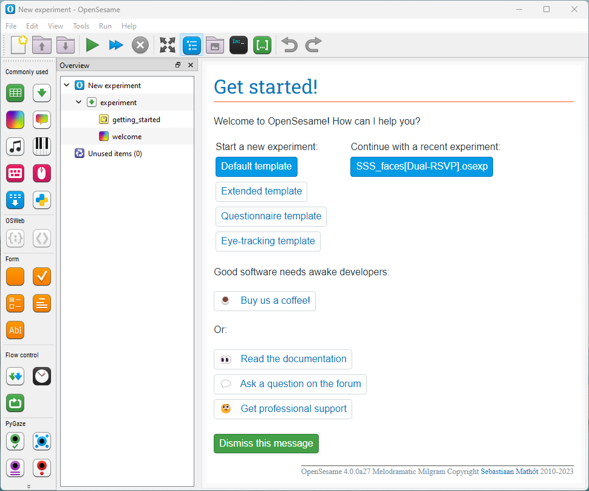
A Get started! alatt látható a sablonok listája. Ezek a sablonok kényelmes kiindulópontot nyújtanak az új kísérletekhez. Ha már korábban hoztunk létre kísérletet, akkor a legutóbbi kísérletek megjelennek a Continue with a recent experimentalatt.
Most kattintsunk a Default template gombra, ezzel egy minimális kísérleti sablonnal tudjuk elkezdeni a munkát. (Az Extended template jó kiindulópont lehet később a kísérletek számára, ugyanis ez már tartalmazza a próbák alapstruktúráját.)
A sablon kiválasztása után, az Áttekintő ablakban megjelenik egy experiment nevú szekvencia, amely két további itemet tartalmaz: getting_started és welcome.
Mivel nincs szükségünk ezekre az elemekre, töröljük a getting_started elemet az Áttekintés ablakban jobb kattintással az elemen, majd a Delete opció kiválasztásával. Ugyanígy töröljük a welcome elemet is. Az experiment szekvencia így üressé válik.
A 5.3 ábrán látható az Áttekintés ablak tartalma a törlés után.
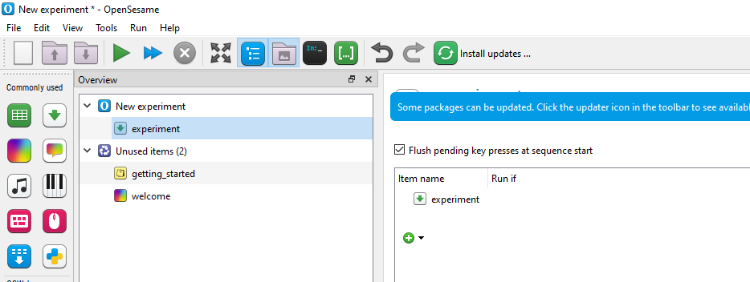
5.4.1 Instrukciós oldalak hozzáadása
A kísérlet elején egy instrukciós oldalt fogunk megjeleníteni a kísérleti személynek. Ehhez a form_text_display elemet fogjuk használni. A form_text_display elem egy olyan item, amely szöveget jelenít meg. Ezt az elemet fogjuk használni a kísérleti személynek szóló instrukciók megadására a kísérlet elején.
Kattintsunk az experiment elemen az Áttekintés ablakban. Az item beállításai a Tab ablakban jelennek meg, ahol egy üres szekvenciát láthatunk. A fogd és vidd módszerrel helyezzünk egy form_text_display elemet az Item eszköztárból. A keresett item a Form csoportban található.
Az Áttekintő ablak és a Tab ablak tartalma a 5.4 ábrán látható módon változott meg.
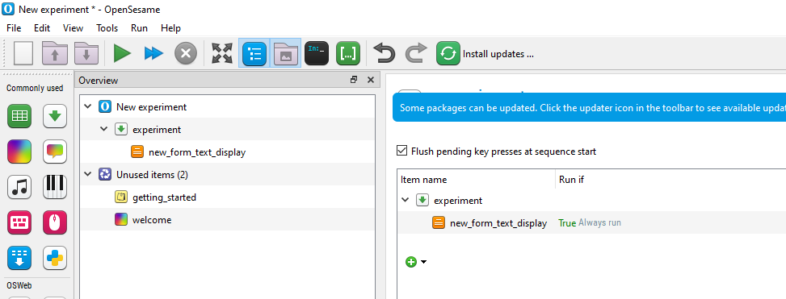
5.4.2 Ciklus és újabb szekvencia hozzáadása
A gyakorló rész számára egy ciklust kell hozzáadnunk az experiment szekvenciához. Ehhez a loop elemet fogjuk használni. A ciklus elem egy olyan elem, amely egy másik elemet többször futtat. Ezt az elemet fogjuk használni a kísérlet gyakorló fázisához.
Fogd és vidd módszerrel helyezzünk egy loop elemet az Item eszköztárból az experiment szekvenciába. Az új elemek mindig azon elem alá kerülnek, amelyre ráhúztuk őket. Tehát ha az új ciklust a korábban létrehozott form_text_display elemre húzzuk, akkor az ott fog megjelenni. Ha az új elemet rossz helyre húzzuk, később mozgatással könnyen átrendezhetjük őket.
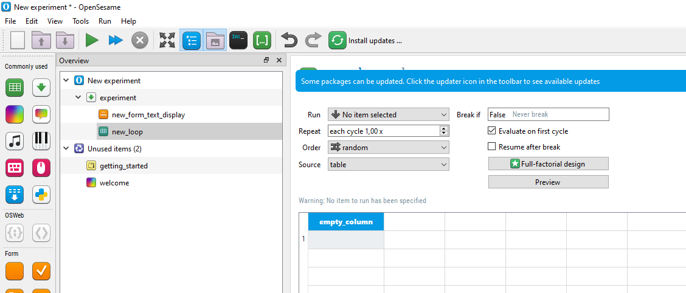
A ciklus önmagában nem csinál semmit. Mindig szüksége van egy másik elemre, amelyet futtat. Ezért ki kell töltenünk az új ciklus elemet egy másik elemmel. Ha a Tab ablakban megnézzük a ciklust, akkor egy figyelmeztető üzenet is megjelenik, mely szerint nincs ismétlendő elem a ciklusban.
A fogd és vidd módszerrel helyezzünk egy sequence elemet az Item eszköztárból a ciklus elembe. Egy felugró ablak jelenik meg, amely megkérdezi, hogy az új szekvenciát a ciklus elem után vagy bele szeretnénk-e helyezni. Válasszuk az Insert into new_loop lehetőséget.
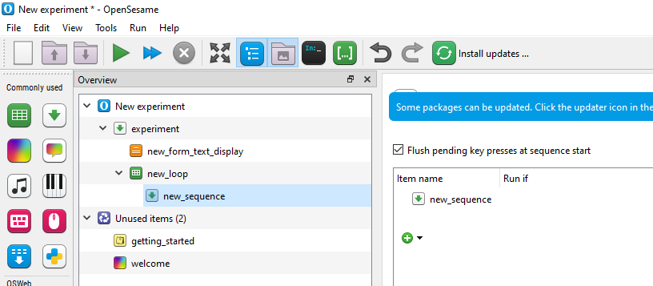
5.4.3 Füzzünk hozzá egy új form_text_display elemet a gyakorló fázis végén
A gyakorló rész után tájékoztatni szeretnénk a résztvevőt, hogy a valódi kísérlet el fog kezdődni. Ehhez szükségünk van egy újabb form_text_display elemre.
A fogd és vidd módszerrel helyezzünk el a ciklus után egy egy form_text_display elemet az Item eszköztárból
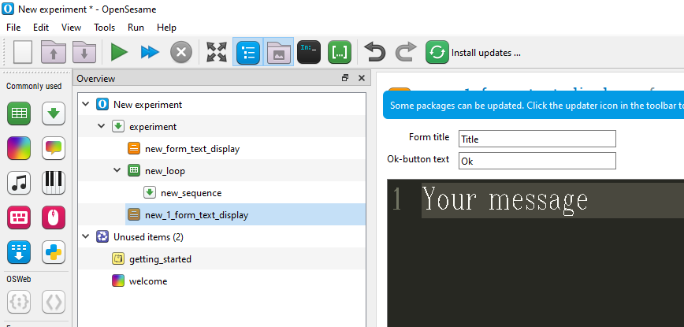
5.4.4 Az éles rész elkészítése
Adjunk meg egy új ciklus elemet, amely tartalmazza a korábban létrehozott szekvenciát.
Szükségünk van egy ciklus elemre az éles fázisban, éppúgy, mint a gyakorló fázisban. Ezért húzzunk egy ciklus elemet az Item eszköztárból az utolsó form_text_display elemre.
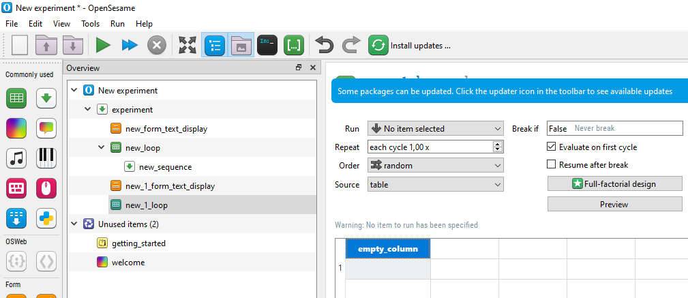
Az újonnan létrehozott ciklus (amelyet new_1_loop-nek nevezünk) üres, és egy szekvenciával kell kitölteni, éppúgy, mint az előzőleg létrehozott ciklust. Azonban mivel a gyakorló és az éles rész kérdései azonosak lesznek, így ugyanazt a szekvenciát kell használnunk. Ezért nem kell új szekvenciát az Item eszköztárból felhasználni, hanem újra felhasználjuk a meglévőt, azaz létrehozhatunk egy kapcsolt másolatot (Linked copy).
Ahhoz, hogy a kapcsolt másolatot létrehozzuk, jobb gombbal kattintsunk az előzőleg létrehozott new_sequence elemen, majd válasszuk a Copy (linked) lehetőséget. Most kattintsunk jobb gombbal a new_1_loop elemen, és válasszuk a Paste lehetőséget. A felugró ablakban válasszuk az Insert into new_1_loop lehetőséget.
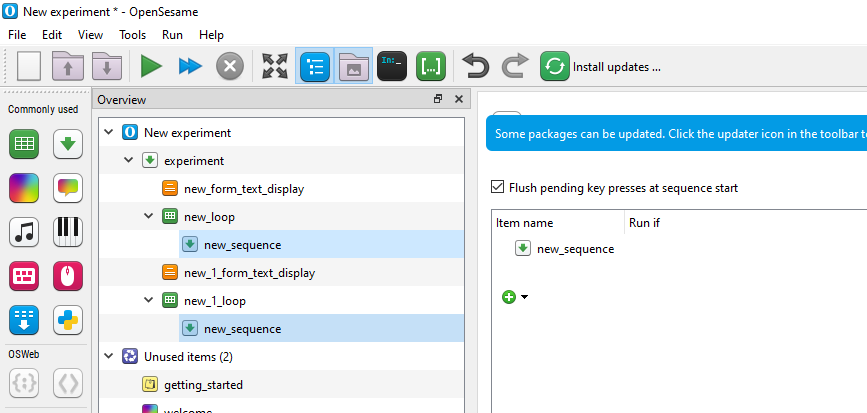
5.4.5 Adjunk egy instrukciós oldalt a kísérlet végéhez
Amikor a kísérlet befejeződik, el kell búcsúznunk a résztvevőtől. Ehhez szükségünk van egy új form_text_display elemre.
Menjünk vissza az experiment szekvenciához, és húzzunk egy form_text_display elemet az Item eszköztárból az new_1_loop elemre.
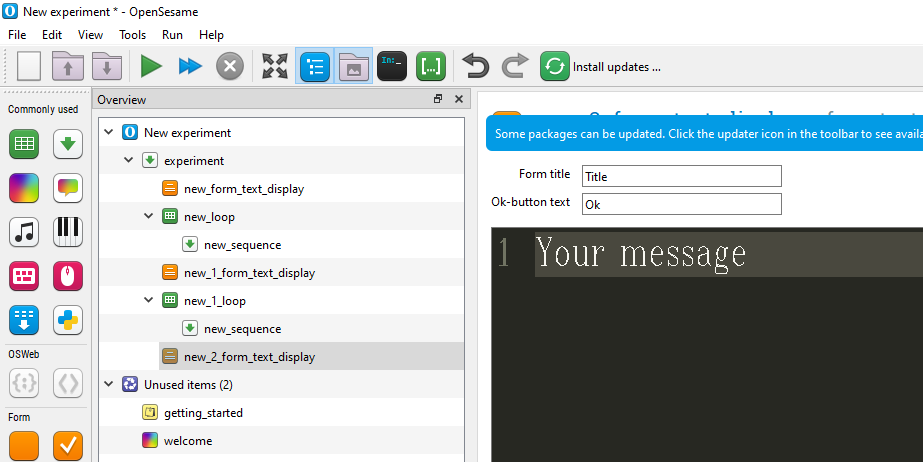
5.4.6 Adjunk beszédes neveket az itemeknek
Alapértelmezés szerint az új itemek létrehozás során kevéssé értelmes neveket kaptak, például new_sequence vagy new_2_form_text_display. Jó gyakorlat az elemeknek beszédes nevet választani. Ez sokkal könnyebbé teszi az kísérlet struktúrájának megértését. Ha szeretnénk, akkor minden elemhez hozzáadhatunk egy leírást is. Az elemek nevei alfanumerikus karakterekből és/vagy aláhúzásjelekből állhatnak.
- Válasszuk ki az
new_form_text_displayelemet azÁttekintő ablakban, duplán kattintsunk a címre aTab ablaktetején, és nevezzük át az elemetinstructions-ra. (AzÁttekintő ablakban is elvégezhetjuk ezt, a gyorsbillentyű az F2). - Nevezzük át az
new_loopelemetpractice_loop-ra. - Nevezzük át az
new_sequenceelemetblock_sequence-re. Mivel ezt az elemet kapcsolt másolattal lejjebb is felhasználtuk, anew_1_loopelem neve is automatikusan megváltozik. (Látjuk, hogy a kapcsolt másolatok használata milyen hatékony, mindig használjuk, ha ez lehetséges.) - Nevezzük át az
new_1_form_text_displayelemetend_of_practice-re. - Nevezzük át az
new_1_loopelemetexperimental_loop-ra. - Nevezzük át az
new_2_form_text_displayelemetend_of_experiment-re.
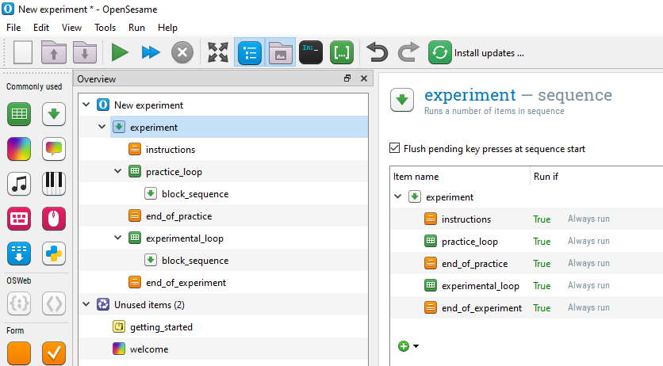
5.4.7 Adjunk beszédes nevet az egész kísérletnek
A kísérlet egészének is van egy címe és egy leírása. Kattintsunk a New experiment elemre az Áttekintő ablakban. A New experiment címet ugyanúgy átnevezhetjük, mint az elemeket.
Nevezzük át a kísérletet Tutorial: Gaze cuing-re. Az elemek nevével ellentétben a kísérlet címe tartalmazhat szóközöket, és más írásjeleket is.
Az Áttekintő ablakban az egész kísérlet így néz ki, mint a ?fig-osszefoglalo-01 ábrán.
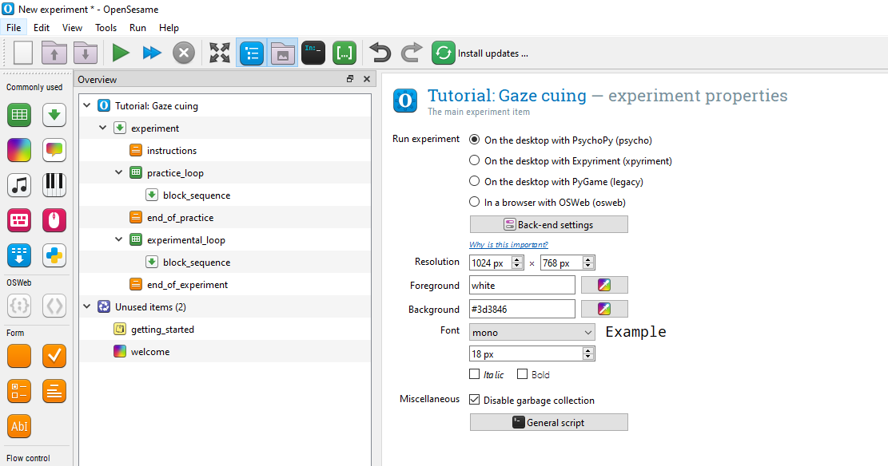
Ideje elmenteni a kísérletet. A gyorsbillentyű a Ctrl+S.